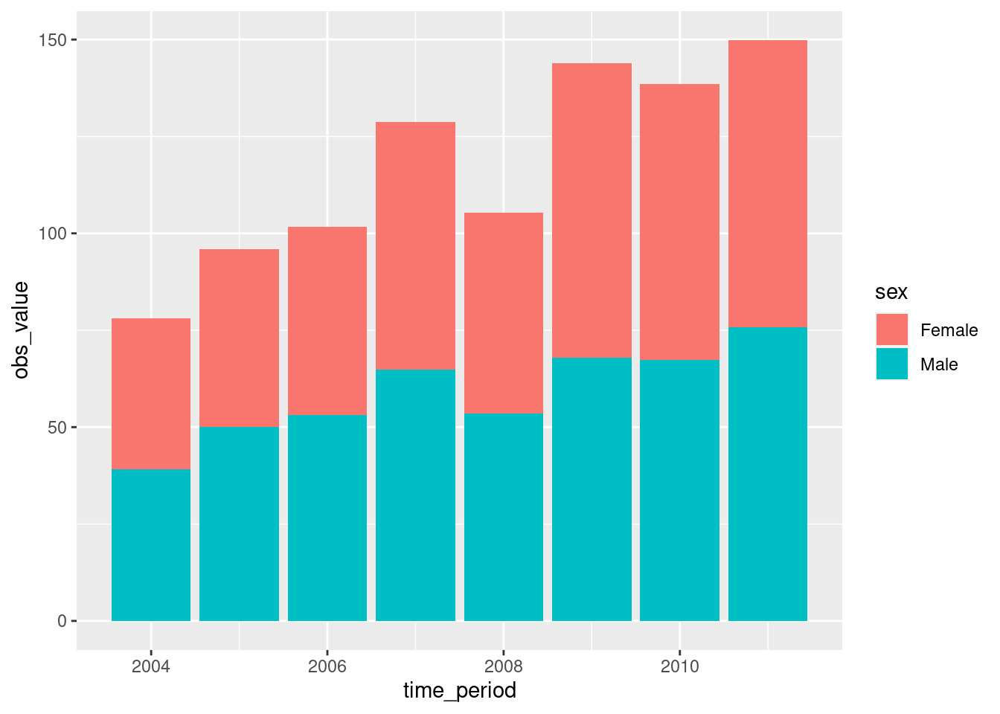
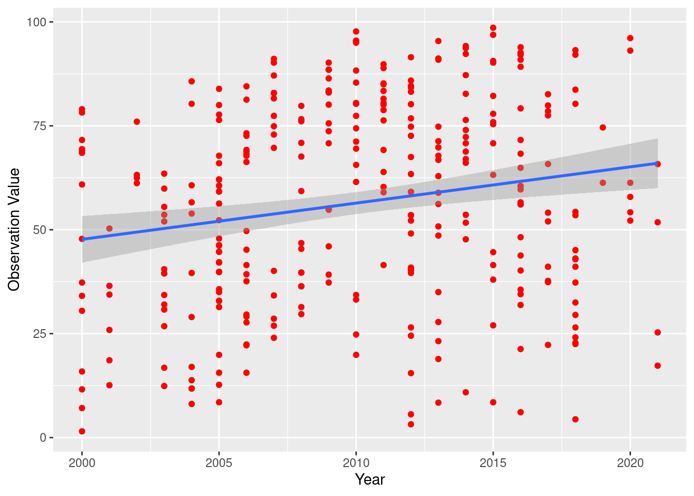
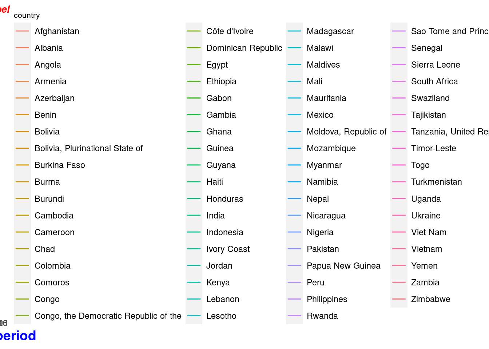

# install.packages(c("ggplot2","dplyr","rnaturalearth","plotly"))
library(rnaturalearth)Unicef Data Viz
Running Code
When you click the Render button a document will be generated that includes both content and the output of embedded code. You can embed code like this:
Bar Chart
library(ggplot2)
unicef_indicator <- read.csv("./unicef_indicator.csv")
data = unicef_indicator[unicef_indicator$time_period > 2003 & unicef_indicator$time_period < 2012, ]
ggplot(data, aes(x=time_period, y=obs_value, fill = sex)) +
geom_bar(position = "stack",
stat = "summary",
fun = "mean")
Scatter Plot
library(ggplot2)
library(dplyr)
Attaching package: 'dplyr'The following objects are masked from 'package:stats':
filter, lagThe following objects are masked from 'package:base':
intersect, setdiff, setequal, uniondata2 = unicef_indicator[unicef_indicator$time_period > 2003 & unicef_indicator$time_period < 2012, ]
data3 <- data2 %>%
group_by(time_period)%>%
summarize(mean=mean(obs_value))
ggplot(unicef_indicator,aes(x=as.numeric(time_period),y=as.numeric(obs_value))) +
geom_point(color='red') +
geom_smooth(method = 'lm') +
xlab("Year") + ylab("Observation Value")`geom_smooth()` using formula = 'y ~ x'
Time series Chart
library(ggplot2)
library(dplyr)
data3 <- unicef_indicator %>%
group_by(time_period)%>%
summarize(mean=mean(obs_value))
# Most basic bubble plot
ggplot(unicef_indicator, aes(x=time_period, y=obs_value, group = country, colour = country)) +
geom_line() +
ggtitle("label") +
theme(
plot.title = element_text(colour="red",size=10, face="bold.italic",hjust = 0.5),
axis.title.x = element_text(colour="blue",size=14, face="bold"),
axis.title.y = element_text(colour="green",size=14, face="bold"),
legend.title=element_text(size=8))